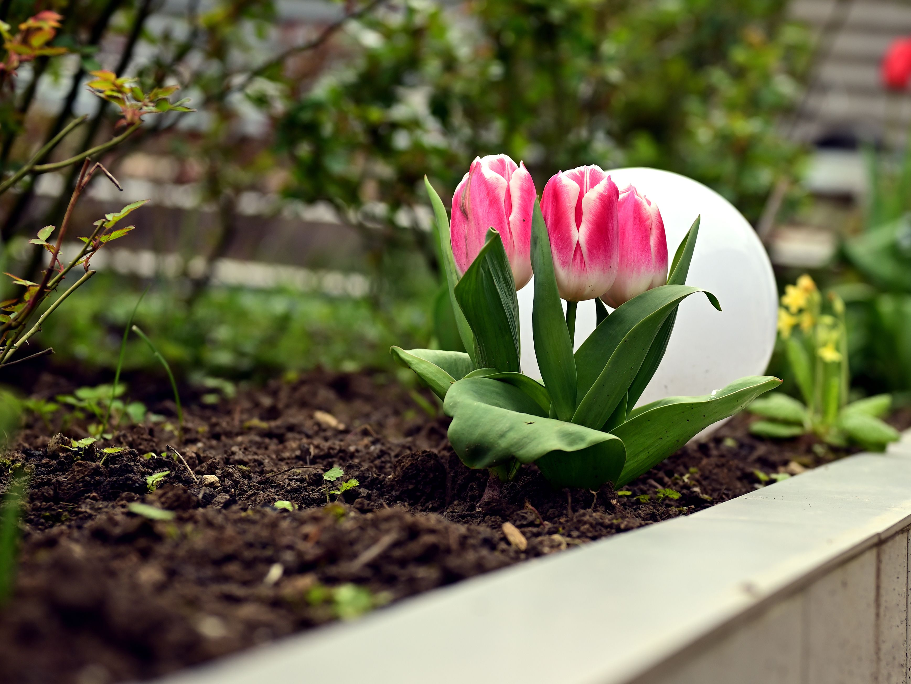

A garden that supports bees, butterflies, and other pollinators is built around diversity, continuity, and appropriate habitat. Suitable flowers, regional plants, safe water, shelter, host plants, and careful maintenance can make even a small outdoor space more useful to local wildlife.
In This Article
- Plant a Diverse Selection of Flowers
- Prioritize Plants Adapted to Your Region
- Offer Water Safely
- Preserve Small Natural Shelters
- Reduce Unnecessary Pesticide Use
- Include Plants for Butterfly Life Cycles
- Provide Sunny and Sheltered Areas
- Plan Bloom Times Across the Season
- Use Containers in Small Spaces
- Maintain the Garden Gradually
- Create Layers of Habitat
- Protect Nesting Opportunities
- Use Healthy Gardening Practices
- Connect Separate Planting Areas
- Choose Plants With Realistic Maintenance Needs
- Frequently Asked Questions
- Conclusion
- Keep a Seasonal Observation Log
- Keep a Seasonal Observation Log
- Keep a Seasonal Observation Log
- Keep a Seasonal Observation Log
- Keep a Seasonal Observation Log
- Keep a Seasonal Observation Log
- Keep a Seasonal Observation Log
- Keep a Seasonal Observation Log
- Keep a Seasonal Observation Log
Plant a Diverse Selection of Flowers
Bees, butterflies, and other pollinators differ in body size, feeding behavior, and the flower shapes they can use. Combine several flower forms, heights, colors, and plant families so more visitors have access to food.
Plan for a long flowering season instead of one spectacular month. Include plants that bloom at different times so nectar and pollen remain available for as much of the local growing season as possible.
Group several plants of the same species together where space permits. Repeated patches can be easier to locate than isolated single flowers.
Prioritize Plants Adapted to Your Region
Locally native plants can be especially valuable because local wildlife has developed relationships with them over time. They may also be well adapted to regional rainfall, temperature, and soil when selected for the correct site.
Native does not automatically mean suitable everywhere. Check mature size, light, moisture, and regional suitability before planting.
Use reliable local nurseries, botanical gardens, universities, or conservation resources to identify appropriate plants and avoid invasive species.
Offer Water Safely
Pollinators need water during dry periods. If you provide a source, keep it shallow and offer stable landing places such as stones rising above the water.
Clean and refresh small water sources regularly. Neglected standing water can become unhygienic and create other problems.
Place the water where it is protected from constant disturbance but remains easy for you to clean.
Preserve Small Natural Shelters
An excessively tidy garden can remove nesting and resting places. Depending on local conditions, selected areas of stems, leaf litter, bare ground, or denser vegetation may provide habitat.
You do not need to leave the whole garden unmanaged. Keep habitat zones deliberate and away from important paths.
Stagger pruning and cleanup instead of removing every dry stem and seed head at once.
Reduce Unnecessary Pesticide Use
Products intended to control pests can also affect beneficial insects. Identify the actual problem before deciding that treatment is necessary.

Many garden insects are harmless or useful, and some caterpillars are juvenile butterflies. Correct identification prevents unnecessary intervention.
If a product must be used, follow the label exactly and minimize unnecessary exposure to flowering plants and beneficial insects.
Include Plants for Butterfly Life Cycles
Adult butterflies may visit flowers for nectar, but caterpillars often depend on specific host plants. A garden containing only nectar flowers may support adults without supporting reproduction.
Research butterflies common to your region and identify suitable host plants for those species.
Accept some leaf feeding on host plants. A completely untouched host plant is not necessarily the goal of a butterfly-supporting garden.
Provide Sunny and Sheltered Areas
Many pollinators use warmth from sunlight, while persistent strong wind can make feeding more difficult. Combine sunny flowering areas with some appropriate shelter.
Use shrubs, walls, fences, or layered vegetation carefully so protection does not create excessive shade.
Observe conditions throughout the day before permanently locating important flowering groups.
Plan Bloom Times Across the Season
Make a simple calendar showing when major plants are expected to flower. Look for periods when very little is available.

Fill gaps with suitable regional plants rather than purchasing many species that bloom at the same time.
Weather changes flowering dates, so update your plan using observations from each season.
Use Containers in Small Spaces
Balconies, patios, and terraces can provide meaningful resources when containers hold suitable flowering plants.
Use containers large enough for mature plants, provide drainage, and remember that pots can dry faster than garden beds.
Place them where light conditions suit the plants and where insects are not constantly disturbed by doors or foot traffic.
Maintain the Garden Gradually
Pollinator habitat benefits from continuity. Avoid removing all vegetation, pruning every area, or replacing every flowering plant at the same time.
Work in sections so resources remain available while another part of the garden is maintained.
Observe which plants receive frequent visits and use those observations to guide future planting.
Create Layers of Habitat
Think of the garden as a collection of connected layers rather than a row of flowers. Ground-level plants, medium-height perennials, shrubs, and small trees can provide different feeding, resting, and shelter opportunities when they are appropriate for the site.
Layering also gives the garden visual depth. Keep mature dimensions in mind so taller vegetation does not eventually overwhelm paths, windows, or smaller plants.

Leave deliberate openings between groups. A wildlife-friendly garden can still have clear structure and comfortable access for people.
Protect Nesting Opportunities
Different pollinators nest in different ways. Some use cavities or hollow stems, while some ground-nesting bees need suitable patches of soil. Avoid assuming that one commercial insect structure serves every species.
Learn which pollinators occur locally before adding specialized habitat. In many gardens, appropriate plants and less aggressive cleanup provide more practical benefits than decorative accessories.
Keep potential nesting areas away from heavy traffic and do not disturb active nests unnecessarily.
Use Healthy Gardening Practices
Healthy plants are generally better able to flower consistently and provide useful resources. Match each species to suitable light, moisture, soil, and spacing rather than forcing it into an unsuitable location.
Water new plants appropriately while they establish and avoid excessive fertilizer that encourages weak growth or unnecessary runoff.
Remove genuinely diseased material when needed and keep tools reasonably clean, while still preserving safe habitat areas elsewhere.
Connect Separate Planting Areas
If possible, avoid placing every pollinator plant in one isolated corner. Repeating suitable flowers in several parts of the garden can create a more continuous route between resources.
Small gardens can achieve this with containers, border plants, and flowering shrubs positioned at useful intervals.
Connections are especially helpful when neighboring properties or nearby green spaces also contain compatible vegetation.
Choose Plants With Realistic Maintenance Needs
A plant that requires constant intervention may not be a good long-term choice even if it is attractive to pollinators. Consider watering, pruning, spreading behavior, and seasonal cleanup before planting.
Favor species that can remain healthy under the actual conditions of the site. This reduces replacement costs and makes it easier to maintain continuity from year to year.
Keep a simple record of successful plants so future purchases are based on evidence from your own garden.
Frequently Asked Questions
Do I need a large garden to help pollinators?
No. A balcony, patio, or terrace with several suitable flowering plants can provide food and resting opportunities.
Are all flowers equally useful?
No. Flower structure, nectar, pollen, bloom period, and local ecological relationships differ, so diversity and regional suitability matter.
Should I remove every caterpillar?
No. Some caterpillars become butterflies or moths and depend on particular host plants. Identify them before intervening.
Are native plants always suitable?
They can be valuable, but each plant still needs to match the garden's light, soil, moisture, climate, and available space.
Can pesticides be used?
Avoid unnecessary pesticide use. When treatment is required, identify the problem and follow the product label while minimizing exposure to beneficial insects.
Conclusion
A pollinator-friendly garden develops through diverse flowering periods, appropriate regional species, safe water, shelter, host plants, reduced unnecessary pesticide use, and gradual maintenance. Observe the insects that actually visit and adapt the planting over time. The result can remain attractive and practical for people while providing meaningful resources for local wildlife.
Keep a Seasonal Observation Log
Record the first and last flowering dates of important plants, the insects you see most often, and periods when resources appear scarce. A simple notebook or monthly photograph is enough to reveal patterns that are difficult to remember from one season to the next.
Use these observations to choose future plants, adjust maintenance timing, and identify which parts of the garden are genuinely useful to pollinators. Evidence from your own space is more valuable than adding plants only because they appear on a generic list.
Keep a Seasonal Observation Log
Record the first and last flowering dates of important plants, the insects you see most often, and periods when resources appear scarce. A simple notebook or monthly photograph is enough to reveal patterns that are difficult to remember from one season to the next.
Use these observations to choose future plants, adjust maintenance timing, and identify which parts of the garden are genuinely useful to pollinators. Evidence from your own space is more valuable than adding plants only because they appear on a generic list.
Keep a Seasonal Observation Log
Record the first and last flowering dates of important plants, the insects you see most often, and periods when resources appear scarce. A simple notebook or monthly photograph is enough to reveal patterns that are difficult to remember from one season to the next.
Use these observations to choose future plants, adjust maintenance timing, and identify which parts of the garden are genuinely useful to pollinators. Evidence from your own space is more valuable than adding plants only because they appear on a generic list.
Keep a Seasonal Observation Log
Record the first and last flowering dates of important plants, the insects you see most often, and periods when resources appear scarce. A simple notebook or monthly photograph is enough to reveal patterns that are difficult to remember from one season to the next.
Use these observations to choose future plants, adjust maintenance timing, and identify which parts of the garden are genuinely useful to pollinators. Evidence from your own space is more valuable than adding plants only because they appear on a generic list.
Keep a Seasonal Observation Log
Record the first and last flowering dates of important plants, the insects you see most often, and periods when resources appear scarce. A simple notebook or monthly photograph is enough to reveal patterns that are difficult to remember from one season to the next.
Use these observations to choose future plants, adjust maintenance timing, and identify which parts of the garden are genuinely useful to pollinators. Evidence from your own space is more valuable than adding plants only because they appear on a generic list.
Keep a Seasonal Observation Log
Record the first and last flowering dates of important plants, the insects you see most often, and periods when resources appear scarce. A simple notebook or monthly photograph is enough to reveal patterns that are difficult to remember from one season to the next.
Use these observations to choose future plants, adjust maintenance timing, and identify which parts of the garden are genuinely useful to pollinators. Evidence from your own space is more valuable than adding plants only because they appear on a generic list.
Keep a Seasonal Observation Log
Record the first and last flowering dates of important plants, the insects you see most often, and periods when resources appear scarce. A simple notebook or monthly photograph is enough to reveal patterns that are difficult to remember from one season to the next.
Use these observations to choose future plants, adjust maintenance timing, and identify which parts of the garden are genuinely useful to pollinators. Evidence from your own space is more valuable than adding plants only because they appear on a generic list.
Keep a Seasonal Observation Log
Record the first and last flowering dates of important plants, the insects you see most often, and periods when resources appear scarce. A simple notebook or monthly photograph is enough to reveal patterns that are difficult to remember from one season to the next.
Use these observations to choose future plants, adjust maintenance timing, and identify which parts of the garden are genuinely useful to pollinators. Evidence from your own space is more valuable than adding plants only because they appear on a generic list.
Keep a Seasonal Observation Log
Record the first and last flowering dates of important plants, the insects you see most often, and periods when resources appear scarce. A simple notebook or monthly photograph is enough to reveal patterns that are difficult to remember from one season to the next.
Use these observations to choose future plants, adjust maintenance timing, and identify which parts of the garden are genuinely useful to pollinators. Evidence from your own space is more valuable than adding plants only because they appear on a generic list.